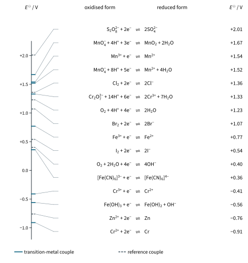
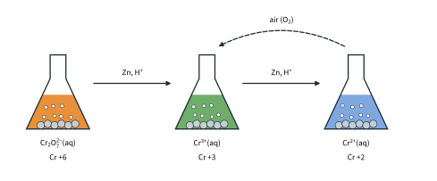
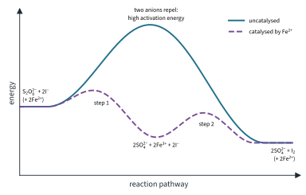
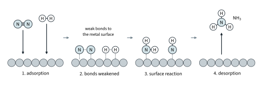
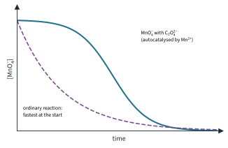

Transition Elements 3
Topic 13 · Transition Elements Part 3
On this page
Introduction
Part 1 showed that transition elements have variable oxidation states. This Part is about what that makes them good at. Moving between oxidation states is redox, so transition metal ions make useful oxidising and reducing agents; and an ion that can switch between two states, and back, can carry electrons from one reactant to another, which makes it a catalyst. Topic 12 Part 2 supplies the standard electrode potentials used here; Part 2 of this topic covers complexes and colour.
Key terms
You will use these terms throughout this Part.
| Term | Meaning |
|---|---|
| Redox system (couple) | The oxidised and reduced forms of a species, linked by a half-equation, e.g. Fe3+ + e− ⇌ Fe2+. |
| Oxidising agent | A species that accepts electrons (and is itself reduced). |
| Reducing agent | A species that donates electrons (and is itself oxidised). |
| Standard electrode potential, E⦵ | The potential difference between a half-cell and a standard hydrogen electrode, both under standard conditions (Topic 12 Part 2). The more positive E⦵, the stronger the oxidised form as an oxidising agent. |
| Homogeneous catalyst | A catalyst in the same phase as the reactants. |
| Heterogeneous catalyst | A catalyst in a different phase from the reactants, usually a solid with gaseous or liquid reactants. |
| Adsorption | The attachment of molecules to a surface by forming weak bonds to it. |
| Catalyst poisoning | Loss of catalytic activity when a substance is adsorbed so strongly that it blocks the active sites. |
| Autocatalysis (Further example) | Catalysis of a reaction by one of its own products. |
Three redox systems
9476 names three transition metal redox systems. You have met all three in Topic 6 titrations and in Topic 12; here they are side by side, with the transition element chemistry that explains them.
Fig 15 puts the three couples on one ladder with the other main couples used in this Part.

Iron(III) and iron(II)
Fe3+(aq) + e− ⇌ Fe2+(aq) E⦵ = +0.77 V
Fe2+(aq) is pale green and Fe3+(aq) yellow to orange-brown. E⦵ is moderate, so each form is mild:
- Fe2+ is a mild reducing agent. Strong oxidising agents such as acidified MnO4− and Cr2O72− oxidise it completely, which is the basis of the iron titrations of Topic 6. Oxygen in the air oxidises it too (worked example 2).
- Fe3+ is a mild oxidising agent. It oxidises iodide ions but not bromide ions (worked example 4).
The two oxidation states are close enough in stability that iron can switch between them easily, which is why iron ions are good catalysts (worked example 6).
Manganate(VII) and manganese(II)
MnO4−(aq) + 8H+(aq) + 5e− ⇌ Mn2+(aq) + 4H2O(l) E⦵ = +1.52 V
Manganese goes from +7 to +2. With a large positive E⦵, acidified MnO4− is a strong oxidising agent. The colour change is from intense purple to colourless: Mn2+(aq) is very pale pink, which looks colourless at the concentrations used in titrations.
- Self-indicating. In a titration, each drop of purple MnO4− is decolourised as long as there is something left to oxidise. The first permanent pale pink shows the end point, so no indicator is needed.
- Acidify with dilute sulfuric acid, not hydrochloric acid. MnO4− would oxidise chloride ions to chlorine, E⦵cell = (+1.52) − (+1.36) = +0.16 V (Topic 12 Part 2), using up extra titrant. Sulfur in SO42− is already +6 and cannot be oxidised further.1
- Enough acid (Further example). With too little H+, manganate(VII) is reduced only as far as brown manganese(IV) oxide: MnO4− + 4H+ + 3e− ⇌ MnO2 + 2H2O, E⦵ = +1.67 V. A brown precipitate in a manganate(VII) titration means the flask needs more acid.
- The test for SO2. The Data Booklet's Qualitative Analysis Notes give: SO2 "turns aqueous acidified potassium manganate(VII) from purple to colourless".
Dichromate(VI) and chromium(III)
Cr2O72−(aq) + 14H+(aq) + 6e− ⇌ 2Cr3+(aq) + 7H2O(l) E⦵ = +1.33 V
Chromium goes from +6 to +3, and the colour changes from orange to green.2 Acidified dichromate(VI) is a strong oxidising agent, but weaker than manganate(VII).
- It can be used in dilute hydrochloric acid. E⦵cell for oxidising Cl− is (+1.33) − (+1.36) = −0.03 V: marginal, so dichromate does not oxidise chloride appreciably, and titrations can be done in dilute HCl (worked example 3).
- It needs an indicator. Orange to green is hard to judge by eye, so dichromate titrations use a redox indicator.3
- It oxidises alcohols (Topic 11.6): primary alcohols to aldehydes and then carboxylic acids, secondary alcohols to ketones, with the orange to green change.
- Chromate and dichromate are not a redox pair. In 2CrO42− + 2H+ ⇌ Cr2O72− + H2O, chromium is +6 on both sides (Topic 12 Part 1): yellow chromate(VI) and orange dichromate(VI) interconvert with pH.
The three systems compared:
| Fe3+/Fe2+ | MnO4−/Mn2+ | Cr2O72−/Cr3+ | |
|---|---|---|---|
| E⦵ / V | +0.77 | +1.52 | +1.33 |
| Change in oxidation number | +3 ⇌ +2 | +7 ⇌ +2 | +6 ⇌ +3 |
| Colours | yellow-brown ⇌ pale green | purple ⇌ very pale pink (colourless) | orange ⇌ green |
| Typical use | Fe2+ as a reducing agent to be titrated; Fe3+ as a mild oxidising agent | oxidising agent in titrations; test for SO2 | oxidising agent in titrations; oxidising alcohols |
| Indicator in titrations | (it is titrated) | none: self-indicating | redox indicator needed |
| Acid | dilute H2SO4, or dilute HCl with dichromate(VI) | dilute H2SO4 only | dilute H2SO4 or dilute HCl |
Predicting redox reactions with electrode potentials
Worked example 1: zinc and acidified dichromate(VI)
Zinc granules are added to acidified potassium dichromate(VI) in a flask with a loose stopper. The solution turns from orange to green, then to blue. When the blue solution is poured into an open beaker, it slowly turns green again. Explain these observations using E⦵ values.
(To answer this, you have to test each step down the chromium ladder with zinc as the reducing agent, E⦵(Zn2+/Zn) = −0.76 V.)
| Step | Reaction | E⦵cell / V | Verdict |
|---|---|---|---|
| +6 → +3 | Cr2O72− + 14H+ + 3Zn → 2Cr3+ + 3Zn2+ + 7H2O | (+1.33) − (−0.76) = +2.09 | feasible |
| +3 → +2 | 2Cr3+ + Zn → 2Cr2+ + Zn2+ | (−0.41) − (−0.76) = +0.35 | feasible |
| +3 → 0 | 2Cr3+ + 3Zn → 2Cr + 3Zn2+ | (−0.74) − (−0.76) = +0.02 | marginal |
| +2 → 0 | Cr2+ + Zn → Cr + Zn2+ | (−0.91) − (−0.76) = −0.15 | not feasible |
Orange Cr2O72− is reduced to green Cr3+, and then to blue Cr2+ (Fig 16). Reduction of Cr3+ straight to the metal (Data Booklet E⦵(Cr3+/Cr) = −0.74 V) has only +0.02 V in its favour: marginal, and Cr3+ is reduced to Cr2+ instead, with +0.35 V. Once Cr2+ has formed, Cr2+ → Cr is −0.15 V, not feasible. So zinc stops at chromium(II). The zinc also reacts with the acid, and the hydrogen given off sweeps air out of the flask.
Cr2+ is a strong reducing agent. In the open beaker, oxygen from the air oxidises it back to green Cr3+:
4Cr2+ + O2 + 4H+ → 4Cr3+ + 2H2O E⦵cell = (+1.23) − (−0.41) = +1.64 V
(Strictly, H+ can oxidise Cr2+ too, E⦵cell = 0.00 − (−0.41) = +0.41 V, but only slowly; the excess zinc keeps reducing any Cr3+ formed in the flask.)

Worked example 2: why iron(II) hydroxide turns brown in air
The Qualitative Analysis Notes say that the green precipitate from Fe2+(aq) and NaOH(aq) turns brown on contact with air. Iron(II) solutions kept in dilute acid are oxidised by air much more slowly. Compare the two reactions using E⦵ values.
(To answer this, you have to use the couples for the conditions: in alkali, Fe(OH)3/Fe(OH)2 and O2/OH−; in acid, Fe3+/Fe2+ and O2/H2O.)
in alkali: 4Fe(OH)2 + O2 + 2H2O → 4Fe(OH)3 E⦵cell = (+0.40) − (−0.56) = +0.96 V
in acid: 4Fe2+ + O2 + 4H+ → 4Fe3+ + 2H2O E⦵cell = (+1.23) − (+0.77) = +0.46 V
Both are feasible, but iron(II) is a much stronger reducing agent as the hydroxide (E⦵ = −0.56 V) than as the aqueous ion (+0.77 V), and the oxidation of Fe(OH)2 is fast. That is why the green precipitate turns brown (Fe(OH)3) on contact with air, while an acidified iron(II) solution keeps for a while. (E⦵ says nothing about rate; this comparison of rates is an observation.) Standard iron(II) solutions are made up in dilute sulfuric acid for this reason.
Worked example 3: choosing an oxidising agent to titrate iron(II) in hydrochloric acid
A sample of iron(II) is dissolved in dilute hydrochloric acid. Should it be titrated with acidified KMnO4 or with acidified K2Cr2O7?
(To answer this, you have to check two reactions for each oxidising agent: with Fe2+, which you want, and with Cl−, which you do not.)
| Oxidising agent | With Fe2+ | With Cl− | Verdict |
|---|---|---|---|
| MnO4− | (+1.52) − (+0.77) = +0.75 V: yes | (+1.52) − (+1.36) = +0.16 V: yes | unsuitable: Cl− would be oxidised too |
| Cr2O72− | (+1.33) − (+0.77) = +0.56 V: yes | (+1.33) − (+1.36) = −0.03 V: marginal, no appreciable reaction | suitable |
So titrate with dichromate(VI):
Cr2O72−(aq) + 6Fe2+(aq) + 14H+(aq) → 2Cr3+(aq) + 6Fe3+(aq) + 7H2O(l)
With manganate(VII) the iron would have to be in dilute sulfuric acid instead:
MnO4−(aq) + 5Fe2+(aq) + 8H+(aq) → Mn2+(aq) + 5Fe3+(aq) + 4H2O(l)
Worked example 4: iron(III) with iodide and with bromide
Will Fe3+(aq) oxidise (a) iodide ions, (b) bromide ions? (c) (Further example) Would [Fe(CN)6]3− oxidise iodide ions?
(a) 2Fe3+ + 2I− → 2Fe2+ + I2: E⦵cell = (+0.77) − (+0.54) = +0.23 V. Yes: the solution turns brown as iodine forms.
(b) 2Fe3+ + 2Br− → 2Fe2+ + Br2: E⦵cell = (+0.77) − (+1.07) = −0.30 V. No.
(c) Binding iron as a complex changes its E⦵. Cyanide ions bind Fe3+ more strongly than Fe2+, so E⦵([Fe(CN)6]3−/[Fe(CN)6]4−) = +0.36 V, well below +0.77 V for the aqua ions (Topic 12 Part 2). [Fe(CN)6]3− is the weaker oxidising agent: with iodide, E⦵cell = (+0.36) − (+0.54) = −0.18 V, so it does not oxidise I−. The ligands matter, not just the metal and its oxidation state.
Worked example 5: manganese(III) in water (Further example)
Use E⦵ values to show that Mn3+(aq) is unstable in water. (To answer this, you have to ask whether Mn3+ would oxidise water to oxygen.)
4Mn3+(aq) + 2H2O(l) → 4Mn2+(aq) + O2(g) + 4H+(aq) E⦵cell = (+1.54) − (+1.23) = +0.31 V
Positive: Mn3+ oxidises water, so it does not survive in aqueous solution. This fits Part 1, where manganese(III) was less common than manganese(II), and Mn2+ (3d5) is hard to oxidise to Mn3+ (IE3 = 3250 kJ mol−1).
Remember the limits of these predictions (Topic 12 Part 2): E⦵cell says nothing about the rate, it applies only under standard conditions, and a small value means an equilibrium mixture rather than a complete reaction.
Transition elements as catalysts
A catalyst provides an alternative reaction pathway with lower activation energy, and is chemically unchanged at the end of the reaction (Topic 8 Part 2). Transition elements and their compounds are among the most important catalysts, in industry and in living things. 9476 asks you to explain why.
Homogeneous catalysis: Fe2+ in the peroxodisulfate-iodide reaction
Peroxodisulfate ions oxidise iodide ions:
S2O82−(aq) + 2I−(aq) → 2SO42−(aq) + I2(aq)
The reaction is energetically feasible but slow: both reactants are negative ions, which repel each other, so the activation energy is high (Topic 8 Part 2). Fe2+ ions catalyse it in two steps:
step 1: S2O82−(aq) + 2Fe2+(aq) → 2SO42−(aq) + 2Fe3+(aq)
step 2: 2Fe3+(aq) + 2I−(aq) → 2Fe2+(aq) + I2(aq)
Each step is between oppositely charged ions, which attract, so each has a lower activation energy (Fig 17). The Fe2+ used in step 1 is regenerated in step 2.
Worked example 6: why iron can do it
Use E⦵ values to show that both steps are feasible, and explain what this needs of the catalyst.
(To answer this, you have to test each step separately.)
uncatalysed: E⦵cell = (+2.01) − (+0.54) = +1.47 V feasible, but slow
step 1: E⦵cell = E⦵(S2O82−/SO42−) − E⦵(Fe3+/Fe2+) = (+2.01) − (+0.77) = +1.24 V
step 2: E⦵cell = E⦵(Fe3+/Fe2+) − E⦵(I2/I−) = (+0.77) − (+0.54) = +0.23 V
Both steps are feasible because the Fe3+/Fe2+ couple lies between the other two: +0.54 < +0.77 < +2.01 V. Fe2+ is a strong enough reducing agent to be oxidised by S2O82−, and Fe3+ is a strong enough oxidising agent to oxidise I−. Since the cycle can start at either step, Fe3+ works equally well as the catalyst. The general test for a possible catalyst of this kind is that its couple's E⦵ lies between the E⦵ values of the two couples of the reaction; whether it actually speeds the reaction up has to be found by experiment.

Heterogeneous catalysis: reactions on a metal surface
A solid transition metal catalyst works through its surface, in four stages (Fig 18; Topic 8 Part 2):
- Adsorption: reactant molecules form weak bonds to atoms on the surface, using the metal's partly filled d (and s) orbitals.
- Bonds weakened: bonds within the adsorbed molecules are weakened, and the molecules are held close together in a suitable orientation.
- Reaction on the surface.
- Desorption: the products leave, freeing the surface for more reactants.
The strength of adsorption matters. Too weak, and the reactants are not held long enough or activated; too strong, and the products do not desorb and the sites stay blocked. Iron, nickel and platinum-group metals adsorb many molecules with about the right strength.

The examples (from Topic 8 Part 2, Topic 9 and Topic 11.4):
- The Haber process: finely divided iron. N2(g) + 3H2(g) ⇌ 2NH3(g). Adsorption weakens the very strong N≡N bond.
- Catalytic converters: platinum, palladium and rhodium on a ceramic honeycomb remove oxides of nitrogen and carbon monoxide: 2CO(g) + 2NO(g) → 2CO2(g) + N2(g).
- Hydrogenation of alkenes (Further example): nickel (Topic 11.4), for example CH2=CH2 + H2 → CH3CH3.
- The Contact process (Further example): vanadium(V) oxide, V2O5, catalyses 2SO2(g) + O2(g) ⇌ 2SO3(g) (Topic 9 Tutorial 2). It works by changing oxidation state, as Fe2+ does: SO2 + V2O5 → SO3 + V2O4 (V from +5 to +4), then V2O4 + ½O2 → V2O5 (back to +5). The two steps add up to SO2 + ½O2 → SO3, and the catalyst is regenerated.
For contrast, the oxidation of atmospheric SO2 catalysed by NO2 (Topic 8 Part 2) is homogeneous catalysis by a compound of nitrogen, which is not a transition element. What a cycle like this needs is two oxidation states that interconvert easily (here +4 in NO2 and +2 in NO); transition elements are simply the commonest elements that have them.
Autocatalysis (Further example)
The reaction of acidified manganate(VII) with ethanedioate ions (Topic 12) is catalysed by one of its own products, Mn2+:
2MnO4−(aq) + 5C2O42−(aq) + 16H+(aq) → 2Mn2+(aq) + 10CO2(g) + 8H2O(l)
At first the reaction is slow, even at 60 °C: the reactants are both negative ions, and there is almost no Mn2+. As Mn2+ forms, it catalyses the reaction, which speeds up. Finally it slows down again as the MnO4− is used up. A graph of [MnO4−] against time is S-shaped, unlike that of an ordinary reaction, which is fastest at the start (Fig 19). In a titration you see it directly: the first few drops of manganate(VII) take a while to decolourise, the later ones go almost at once.

Summary
The ideas of this Part in one table.
| Idea | Key points |
|---|---|
| Fe3+/Fe2+, +0.77 V | Fe2+ mild reducing agent (titrated by MnO4− or Cr2O72−; oxidised by air, fast as Fe(OH)2, +0.96 V); Fe3+ oxidises I− (+0.23 V) but not Br− (−0.30 V). |
| MnO4−/Mn2+, +1.52 V | Strong oxidising agent; purple to colourless; self-indicating; dilute H2SO4, not HCl (+0.16 V). Too little acid: brown MnO2. |
| Cr2O72−/Cr3+, +1.33 V | Weaker than MnO4−; orange to green; usable in dilute HCl (−0.03 V, marginal); needs an indicator. Zinc reduces it to Cr2+ (blue), not to Cr. |
| Predicting | E⦵cell = E⦵(reduction) − E⦵(oxidation); positive: feasible under standard conditions. No information about rate. |
| Catalysis | Variable oxidation states (homogeneous: Fe2+ in S2O82−/I−, catalyst E⦵ between the two couples); partly filled d orbitals for adsorption (heterogeneous: Fe in Haber, Pt/Pd/Rh in converters). Ni in hydrogenation, V2O5, autocatalysis by Mn2+: Further examples. |
Additional information
- Beyond the syllabus: ethanoic acid is too weak an acid to supply enough H+, so brown MnO2 forms; nitric acid is itself an oxidising agent and could oxidise the substance being titrated. ↩
- The hexaaqua ion [Cr(H2O)6]3+ is violet, but chromium(III) solutions met in the laboratory contain sulfate or chloride ions, which replace some of the water ligands, and they look green. Cr3+(aq) is described as green in these notes. ↩
- Beyond the syllabus: a common choice is sodium diphenylamine sulfonate, which turns violet at the end point. ↩